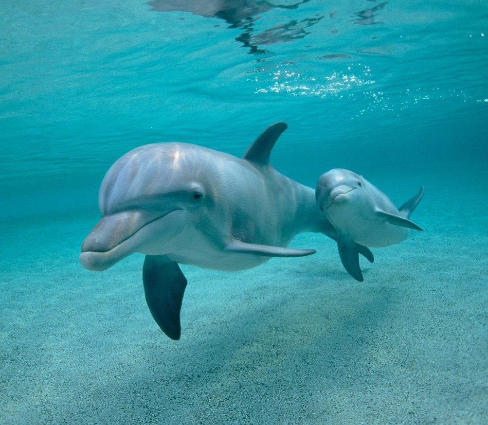
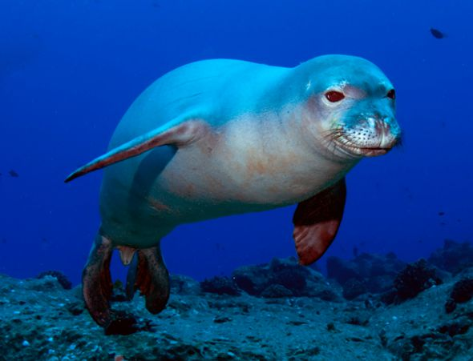
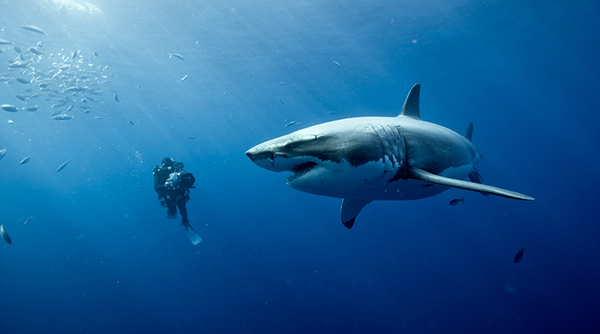
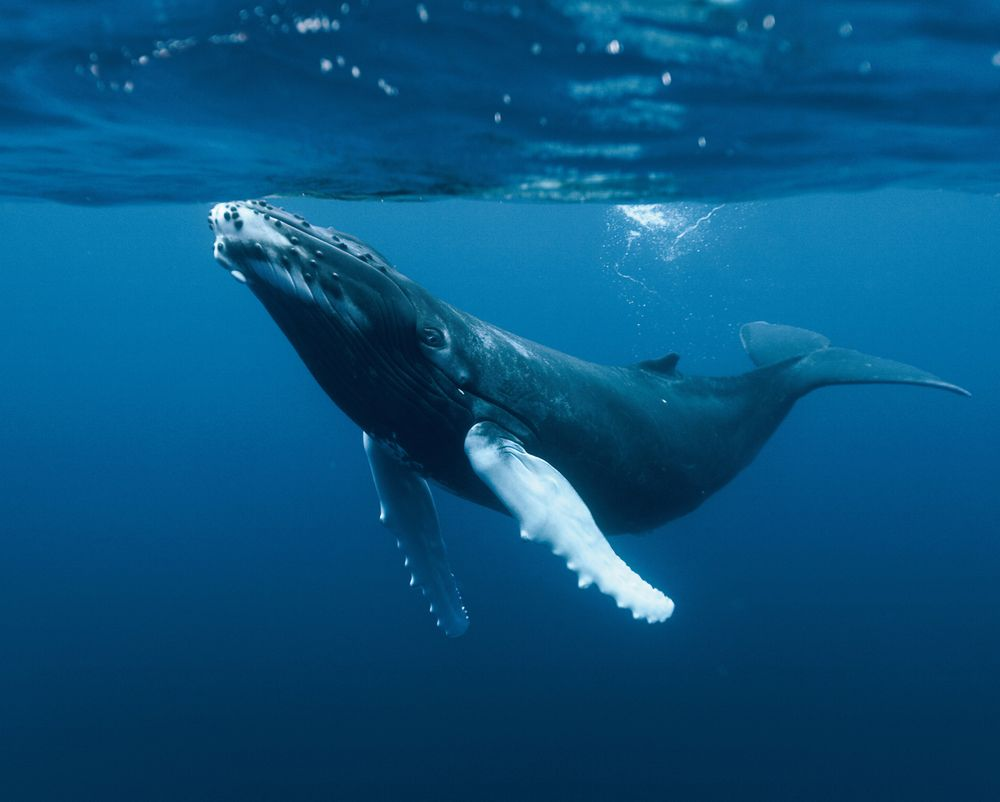

Los animales marinos son todos aquellos animales que viven o pasan gran parte de su vida en el agua. Teniendo en cuenta que los océanos representan el 71% de la corteza de nuestro planeta, parece claro que son muchas las especies de animales marinos que existen aunque también son de los más afectados al respecto de la extinción debido sobretodo a la pesca. Dentro de los animales marinos podemos clasificar a estos en dos grupos: Los que no necesitan un 100 % del agua: Son los animales que dependen de la tierra firme para su reproducción, teniendo a sus crías en la orilla o en la costa, pero que también se alimentan de otros animales marinos (como pequeños peces) y siempre se desarrollan cercanos al agua donde además capaces de nadar y de hecho sumergirse durante largos períodos de tiempo. Es el caso de animales como, los lobos marinos, los pingüinos y las focas. Los que si necesitan un 100% del agua: Son los animales que nacen, crecen, se reproducen y mueren en el agua, ya que es su hábitat por naturaleza. Fuera de ella no podrían sobrevivir. Ejemplos de este grupo son: las ballenas, la serpiente marina, el pulpo, el calamar, etc. Cabe señalar además que los animales marinos no son sólo los peces. De hecho dentro de este tipo de animales deberíamos clasificar también a aves como las gaviotas, mamíferos como los delfines y ballenas y hasta reptiles como la tortuga marina o la serpiente marina.
Las técnicas de pesca poco respetuosas con el medio marino, como por ejemplo la pesca de arrastre que literalmente barre el mar, arrastrando todo lo que allí habita, no sólo peces sino plantas, crustáceos, corales… La pesca masiva de especies que tardan años en procrear y que por lo tanto son sensibles y su número disminuye a grandes pasos. Como las ballena azul, de 35 metros de largo y casi 200 toneladas, la ballena blanca o el cachalote. Pero la principal amenaza para las especies marinas es la destrucción de su medio, la contaminación del agua y la utilización del fondo marino a modo de vertedero. Un ejemplo de esta actitud irrespetuosa hacia el mar por nuestra parte es la isla de basura que flota a la deriva por el Atlántico, del tamaño de la comunidad de Extremadura. Dejando de lado aunque sin olvidar la critica social, centrémonos en las especies que habitan nuestros mares.
La vida nació en el mar, el número de especies que conocemos en el mar es enorme, y casi todas sirven como alimento a algunos pueblos. Se suele pensar que animales marinos son peces, pero es un error, existen especies que viven dentro o cerca del mar en todas las familias animales; mamíferos: delfines, ballenas… Aves: pingüinos, cormoranes, gaviotas… Reptiles: serpiente marina, tortuga marina, excepto anfibios, no existe ningún anfibio marino, se cree que es porque los anfibios evolucionaron de las demás especies animales una vez salieron del mar. En el medio marino existen especies fascinantes, como los pulpos, capaces de camuflarse en cualquier lugar, adquiriendo el color y la textura de las rocas o del terreno que les rodea sea cual sea. También son conocidos, por su gran inteligencia, los delfines, quizás los animales mas inteligentes de la tierra, con un elaborado sistema de comunicación que les permite elaborar estrategias de caza en equipo o protegerse de los depredadores. A veces incluso se han oído historias de delfines que ayudaban a los náufragos a sobrevivir o que acompañaban a los pesqueros guiándoles hacia los bancos de arenques.
La vida nació en el mar, el número de especies que conocemos en el mar es enorme, y casi todas sirven como alimento a algunos pueblos. Se suele pensar que animales marinos son peces, pero es un error, existen especies que viven dentro o cerca del mar en todas las familias animales; mamíferos: delfines, ballenas… Aves: pingüinos, cormoranes, gaviotas… Reptiles: serpiente marina, tortuga marina, excepto anfibios, no existe ningún anfibio marino, se cree que es porque los anfibios evolucionaron de las demás especies animales una vez salieron del mar. En el medio marino existen especies fascinantes, como los pulpos, capaces de camuflarse en cualquier lugar, adquiriendo el color y la textura de las rocas o del terreno que les rodea sea cual sea. También son conocidos, por su gran inteligencia, los delfines, quizás los animales mas inteligentes de la tierra, con un elaborado sistema de comunicación que les permite elaborar estrategias de caza en equipo o protegerse de los depredadores. A veces incluso se han oído historias de delfines que ayudaban a los náufragos a sobrevivir o que acompañaban a los pesqueros guiándoles hacia los bancos de arenques.